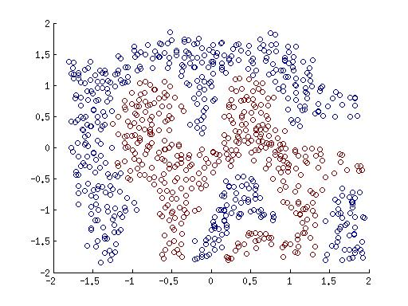
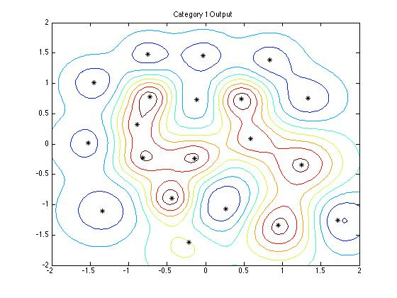
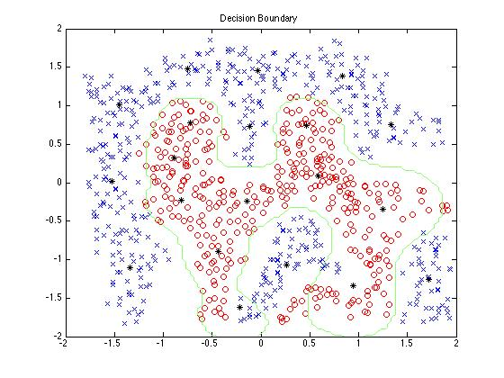

Demo usage of RBF NN
The RBF-NN works by first selecting K (currently 10) data-points for each classification category to act as the RBF-centers and then trains the network by trying to minimize the loss of the complete RBF-NN on training manipulating the weights for the output layers.
A sample run of the RBF-NN on a dummy dataset is as follows.

Dummy Dataset

Countours

Decision Boundary
Performance on MNIST
The RBF-NN was trained on the 60k training images and the 10k test images and the performance for classification tasks are as follows.
> Training Accuracy : 55418/60000, 92.4%
> Testing Accuracy : 9324/10000, 93.2%